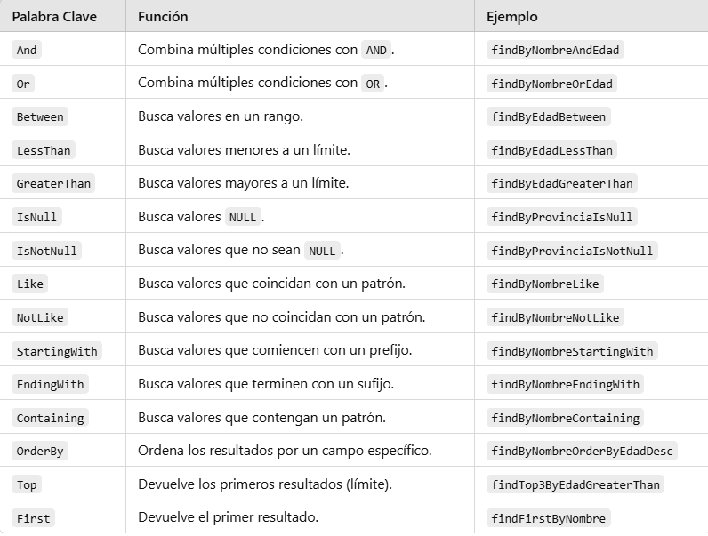

Consultas con Spring Data JPA¶
En la primera aplicación utilizamos findAll() para recuperar todas las comarcas. Este método ya está disponible porque nuestro repositorio hereda de JpaRepository: no necesitamos declararlo ni escribir su consulta.
Ahora queremos buscar solo las comarcas de una provincia. Para definir esta consulta veremos dos alternativas: utilizar el nombre del método o escribir la consulta con @Query. Seguiremos trabajando en ComarcaRepository.kt, dentro del paquete repository.
Consultas por el nombre del método¶
Spring Data JPA interpreta el nombre de los métodos del repositorio para construir la consulta. Son las consultas derivadas: declaramos qué queremos buscar y Spring Data JPA proporciona la implementación.
Cómo se construye el nombre¶
El nombre no se elige libremente: combina palabras reconocidas por Spring Data JPA con los nombres de las propiedades de nuestra entidad. Para las búsquedas que veremos, podemos utilizar este esquema:
| Parte | Para qué sirve | Ejemplo |
|---|---|---|
findBy |
Inicia una búsqueda; después de By aparecen los criterios. |
findByProvincia |
| Propiedad | Indica qué propiedad de la entidad se consulta. Se escribe con inicial mayúscula dentro del método. | provincia → Provincia; nomC → NomC |
| Operador | Indica cómo comparar. Si se omite, se busca por igualdad. | NomCContaining busca nombres que contengan un texto. |
And o Or |
Une dos condiciones. Después se escribe la siguiente propiedad y, si procede, su operador. | ProvinciaAndNomCContaining |
OrderBy + propiedad + Asc o Desc |
Ordena los resultados. No añade un filtro ni necesita otro argumento. | OrderByNomCAsc |
No se escriben espacios ni los signos +: el nombre final es una sola palabra compuesta, como findByProvinciaOrderByNomCAsc.
Por ejemplo:
findByProvincia
│ └─ Provincia: propiedad por la que filtramos
└─────── findBy: buscar por un criterio
Esto significa «buscar comarcas cuya provincia sea igual al valor recibido». No significa buscar una tabla llamada Provincia: la entidad consultada ya viene indicada en JpaRepository<Comarca, String>.
Un ejemplo completo permite reconocer todas las partes de la tabla. Las barras | separan las piezas para leerlas; no se escriben en el nombre del método.
El nombre final es findByProvinciaAndNomCContainingOrderByNomCDesc:
findByinicia la búsqueda.Provinciafiltra por igualdad sobre la propiedadprovincia.Andexige que también se cumpla la siguiente condición.NomC+Containingbusca un texto dentro de la propiedadnomC.OrderBy+NomC+Descordena por nombre de forma descendente.
En los apartados siguientes veremos cómo declarar estos métodos, pasarles valores, combinar condiciones y ordenar los resultados.
Declarar el método y pasarle un valor¶
En la primera aplicación ya dejamos declarado este método:
package org.example.springjpa.repository
import org.example.springjpa.model.Comarca
import org.springframework.data.jpa.repository.JpaRepository
interface ComarcaRepository : JpaRepository<Comarca, String> {
fun findByProvincia(provincia: String): List<Comarca> // (1)!
}
findByindica una búsqueda yProvinciahace referencia a la propiedadprovinciade la entidad. El argumento contiene el valor que buscamos. Devuelve una lista vacía si no hay coincidencias.
Desde un controlador que tenga inyectado el repositorio, podríamos llamarlo así:
- Recupera las comarcas cuya provincia es
Alacant. Esta línea va dentro de un método del controlador; no se añade a la interfaz del repositorio.
La búsqueda equivale a esta consulta SQL, aunque el SQL concreto que genera Hibernate puede tener otros alias o formato:
Propiedades Kotlin, no columnas SQL
Los nombres de los métodos se construyen con las propiedades de la entidad. Por ejemplo, utilizaremos NomC para referirnos a la propiedad nomC, no nom_c, que es el nombre de la columna. Si una propiedad no existe, Spring Data JPA no podrá crear la consulta y puede impedir el arranque de la aplicación.
El nombre del parámetro Kotlin no determina el filtro. En fun findByProvincia(valor: String), se seguiría filtrando por provincia, porque eso lo indica el nombre del método. Usamos provincia también como nombre del parámetro para que el código sea más claro. El valor concreto, como "Alacant", se pasa al llamar al método; no forma parte de su nombre.
Combinar condiciones¶
Vamos a leer un nombre más largo por partes. Este método buscaría las comarcas de una provincia cuyo nombre contenga un texto:
Provinciacompara por igualdad con el primer argumento.Andexige que se cumplan las dos condiciones.NomCContainingcomprueba quenomCcontiene el segundo argumento.
Una llamada desde el controlador sería:
Su significado SQL es:
Para probarlo, añade su declaración dentro de ComarcaRepository antes de llamarlo. Es un ejemplo para comprender la convención; no es necesario añadirlo para continuar con el listado del tema.
Si cambiamos And por Or, bastará con que se cumpla una de las condiciones. Los argumentos se asignan siguiendo el orden de las condiciones del nombre: en este caso, primero la provincia y después el texto del nombre.
Añadir ordenación¶
Podemos ampliar el nombre del método para ordenar el resultado. Añade este método dentro de la misma interfaz ComarcaRepository, junto al anterior:
findByProvinciafiltra por provincia;OrderByNomCordena por la propiedadnomC;Ascindica orden ascendente. Para ordenar en sentido descendente se utilizaDesc.
Solo recibe un argumento porque únicamente hay un filtro, por provincia. NomC aparece después de OrderBy, por lo que indica cómo ordenar, no un segundo valor que debamos pasar.
Por ejemplo, dentro de un método del controlador:
El resultado equivale a:
Palabras clave habituales¶
| Palabra | Significado | Ejemplo de método en ComarcaRepository |
Argumentos |
|---|---|---|---|
| Sin operador | Igual a | findByProvincia |
Una provincia |
Containing |
Contiene un texto | findByNomCContaining |
Un texto |
StartingWith |
Empieza por un texto | findByNomCStartingWith |
Un texto |
IgnoreCase |
Compara sin distinguir mayúsculas y minúsculas | findByProvinciaIgnoreCase |
Una provincia |
IsNull |
No tiene valor | findByProvinciaIsNull |
Ninguno |
And |
Deben cumplirse ambas condiciones | findByProvinciaAndNomC |
Provincia y nombre, en ese orden |
Or |
Debe cumplirse al menos una condición | findByProvinciaOrNomC |
Provincia y nombre, en ese orden |
Estos nombres son ejemplos de consulta, no métodos que debas añadir todos al proyecto. Operadores como GreaterThan, LessThan o Between permiten comparar números o fechas; se utilizan con propiedades cuyos tipos admitan esas comparaciones.
Referencia ampliada de palabras clave
Existen otros prefijos de búsqueda, como readBy, getBy y queryBy. Para mantener los ejemplos uniformes utilizaremos findBy.
No es necesario memorizarlas todas. Consulta esta referencia cuando necesites construir otras búsquedas:

Errores que debes evitar¶
- Escribir
findByNombresi la entidad tiene una propiedadnomC, nonombre. - Utilizar
findByNom_cpensando en la columna SQL: en esta entidad correspondefindByNomC. - Escribir
buscarPorProvinciaesperando que Spring traduzca libremente el nombre: los métodos derivados deben seguir las palabras clave reconocidas. - Olvidar el segundo argumento de un método con dos comparaciones, como
findByProvinciaAndNomC. - Añadir un argumento para
IsNullo paraOrderBy: no reciben un valor de comparación.
En las relaciones también se pueden encadenar propiedades, como PoblacioComarcaProvincia. Lo explicaremos cuando estén definidas las entidades relacionadas; por ahora basta con dominar los nombres de las propiedades de Comarca.
Consultas con @Query y JPQL¶
Cuando un nombre de método resulta demasiado largo o queremos expresar la consulta explícitamente, podemos utilizar @Query. No significa que la consulta vaya a ser más rápida: es otra forma de definirla.
En los ejemplos de este tema, @Query contiene JPQL (Java Persistence Query Language). Se parece a SQL, pero trabaja con entidades y propiedades de Kotlin, en lugar de tablas y columnas.
| En SQL | En JPQL |
|---|---|
Tabla comarca |
Entidad Comarca |
Columna nom_c |
Propiedad nomC |
| Seleccionar columnas | Seleccionar la entidad, como en SELECT c |
Vamos a expresar la misma búsqueda por provincia utilizando JPQL:
package org.example.springjpa.repository
import org.example.springjpa.model.Comarca
import org.springframework.data.jpa.repository.JpaRepository
import org.springframework.data.jpa.repository.Query
import org.springframework.data.repository.query.Param
interface ComarcaRepository : JpaRepository<Comarca, String> {
@Query("SELECT c FROM Comarca c WHERE c.provincia = :provincia") // (1)!
fun findByProvincia(@Param("provincia") provincia: String): List<Comarca> // (2)!
fun findByProvinciaOrderByNomCAsc(provincia: String): List<Comarca>
}
Comarcaes el nombre de la entidad yces su alias.SELECT crecupera entidades completas.c.provinciaes una propiedad y:provinciaes el parámetro cuyo valor recibirá la consulta.@Param("provincia")vincula el argumento Kotlin con:provincia. Al utilizar@Query, la consulta se toma de la anotación, no se deriva del nombre del método.
Son alternativas, no métodos duplicados
Elige una de las dos versiones de findByProvincia: la derivada o la anotada con @Query. Si pruebas esta segunda versión, sustituye la declaración anterior y añade los imports necesarios. No declares dos métodos con el mismo nombre y los mismos parámetros.
La llamada desde el controlador no cambia:
En ambos casos, el resultado es una lista de entidades Comarca. Hibernate se encarga de traducir la consulta a SQL y recuperar los datos de PostgreSQL.
Ejemplo completo para probar las consultas¶
Los siguientes archivos reúnen los ejemplos sobre Comarca de este apartado. No modifican la base de datos: todas las operaciones son consultas. Los ejemplos de relaciones se probarán en su apartado correspondiente.
Repositorio completo¶
Sustituye el contenido de repository/ComarcaRepository.kt por este código. No crees otra interfaz con el mismo nombre. Se conservan los métodos que utilizan los demás ejemplos del tema.
package org.example.springjpa.repository
import org.example.springjpa.model.Comarca
import org.springframework.data.jpa.repository.JpaRepository
import org.springframework.data.jpa.repository.Query
import org.springframework.data.repository.query.Param
interface ComarcaRepository : JpaRepository<Comarca, String> {
fun findByProvincia(provincia: String): List<Comarca>
fun findByProvinciaAndNomCContaining(
provincia: String,
texto: String
): List<Comarca>
fun findByProvinciaOrderByNomCAsc(provincia: String): List<Comarca>
fun findByProvinciaOrderByNomCDesc(provincia: String): List<Comarca>
fun findByNomCContaining(texto: String): List<Comarca>
fun findByNomCStartingWith(texto: String): List<Comarca>
fun findByProvinciaIgnoreCase(provincia: String): List<Comarca>
fun findByProvinciaIsNull(): List<Comarca> // (1)!
fun findByProvinciaAndNomC(provincia: String, nomC: String): List<Comarca>
fun findByProvinciaOrNomC(provincia: String, nomC: String): List<Comarca>
@Query("SELECT c FROM Comarca c WHERE c.provincia = :provincia")
fun findComarcasporProvincia(@Param("provincia") provincia: String): List<Comarca> // (2)!
}
IsNullno recibe argumentos: busca registros cuya provincia no tiene valor.findComarcasporProvinciautiliza la consulta escrita en@Query; no depende de la convención de nombres. Puede coexistir confindByProvinciaporque tienen nombres distintos. Ambos filtran por provincia sin garantizar un orden;findByProvinciaOrderByNomCAscañade la ordenación por nombre.
Controlador de pruebas¶
Crea controller/ConsultasComarcaController.kt. Conserva el controlador de la primera aplicación: este utiliza la ruta /api/consultas-comarcas, por lo que no entra en conflicto con /api/comarcas.
package org.example.springjpa.controller
import org.example.springjpa.model.Comarca
import org.example.springjpa.repository.ComarcaRepository
import org.springframework.web.bind.annotation.*
@RestController
@RequestMapping("/api/consultas-comarcas") // (1)!
class ConsultasComarcaController(
private val comarcaRepository: ComarcaRepository
) {
@GetMapping
fun todas(): List<Comarca> = comarcaRepository.findAll()
@GetMapping("/provincia")
fun porProvincia(@RequestParam provincia: String): List<Comarca> =
comarcaRepository.findByProvincia(provincia)
@GetMapping("/provincia-y-texto")
fun porProvinciaYTexto(
@RequestParam provincia: String,
@RequestParam texto: String
): List<Comarca> =
comarcaRepository.findByProvinciaAndNomCContaining(provincia, texto)
@GetMapping("/orden-asc")
fun ordenAsc(@RequestParam provincia: String): List<Comarca> =
comarcaRepository.findByProvinciaOrderByNomCAsc(provincia)
@GetMapping("/orden-desc")
fun ordenDesc(@RequestParam provincia: String): List<Comarca> =
comarcaRepository.findByProvinciaOrderByNomCDesc(provincia)
@GetMapping("/contiene")
fun contiene(@RequestParam texto: String): List<Comarca> =
comarcaRepository.findByNomCContaining(texto)
@GetMapping("/empieza")
fun empieza(@RequestParam texto: String): List<Comarca> =
comarcaRepository.findByNomCStartingWith(texto)
@GetMapping("/sin-mayusculas")
fun sinMayusculas(@RequestParam provincia: String): List<Comarca> =
comarcaRepository.findByProvinciaIgnoreCase(provincia)
@GetMapping("/sin-provincia")
fun sinProvincia(): List<Comarca> =
comarcaRepository.findByProvinciaIsNull()
@GetMapping("/and")
fun ambas(
@RequestParam provincia: String,
@RequestParam nomC: String
): List<Comarca> =
comarcaRepository.findByProvinciaAndNomC(provincia, nomC)
@GetMapping("/or")
fun cualquiera(
@RequestParam provincia: String,
@RequestParam nomC: String
): List<Comarca> =
comarcaRepository.findByProvinciaOrNomC(provincia, nomC)
@GetMapping("/jpql")
fun conJpql(@RequestParam provincia: String): List<Comarca> =
comarcaRepository.findComarcasporProvincia(provincia) // (2)!
}
- Es un controlador didáctico para probar consultas. Todavía devuelve entidades directamente, como en la primera aplicación; la separación mediante servicios y DTO se explica más adelante.
- Los nombres de los métodos del controlador son libres. La convención de nombres se aplica a los métodos derivados del repositorio, no a los del controlador. Las URL se definen mediante las anotaciones de Spring Web.
Probar desde el navegador¶
Arranca o reinicia la aplicación y abre los siguientes enlaces. También puedes enviarlos como peticiones GET desde Postman; no necesitan cuerpo JSON.
| Consulta | Enlace de prueba | Qué comprobar |
|---|---|---|
| Todas | Listar | Recupera todas las comarcas. |
| Igualdad | Provincia Alacant | Todas tienen esa provincia. |
| Dos condiciones | Provincia y texto | Se cumplen ambos filtros. |
| Orden ascendente | Orden ascendente | Los nombres están ordenados según la ordenación de PostgreSQL. |
| Orden descendente | Orden descendente | El orden se invierte respecto al anterior. |
| Contiene | Contiene Marina | El nombre contiene ese texto. |
| Empieza por | Empieza por Marina | El nombre empieza por ese texto. |
| Sin distinguir mayúsculas | Provincia alacant | Encuentra también la provincia escrita como Alacant. |
| Valor nulo | Sin provincia | Solo devuelve provincias nulas, no cadenas vacías. |
| AND | Provincia y nombre | Deben coincidir la provincia y el nombre exacto. |
| OR | Provincia o nombre | Basta con que coincida uno de los dos valores. |
| JPQL | Consulta con JPQL | Devuelve las mismas comarcas que la búsqueda por igualdad, aunque sin orden garantizado. |
Los valores de los enlaces son ejemplos: comprueba los nombres existentes en tu base geo y cámbialos si es necesario. Una respuesta [] es correcta cuando no hay coincidencias; puede ocurrir especialmente al buscar provincias nulas.
Qué utilizaremos ahora¶
Para las búsquedas sencillas de comarcas, la convención de nombres es suficiente. Utilizaremos @Query cuando ayude a expresar la consulta con mayor claridad.
Las consultas que recorren varias entidades se verán en Relaciones entre entidades, después de definir las relaciones entre comarcas, poblaciones e institutos. Por ahora no necesitas añadir esos métodos al proyecto.
En el siguiente apartado conectaremos la búsqueda por provincia con una página HTML, para introducir el filtro desde el navegador.
Referencia: consultas con Spring Data JPA.